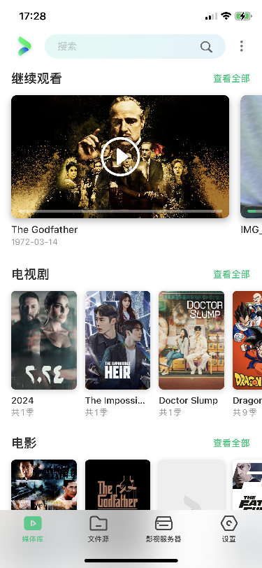

VidHub 快问快答：NAS 党和追剧党都该知道的播放器
8 组问答讲清 VidHub：它是什么、支持哪些格式、云盘怎么用、播放增强怎么调、有没有坑。覆盖 NAS 观影到 4K HDR 的常见疑问。
整理一篇关于 VidHub 的快问快答——如果你在找一款能直接播云盘、能管理媒体库、还能硬解 4K HDR 的播放器，这些问题你大概率想问。
VidHub 到底是个什么播放器？
一句话：VidHub 的官网上把它定位成一款主打云盘和 NAS 媒体管理的跨平台播放器。它不是那种只能打开本地文件的"视频打开器"，而是把你的阿里云盘、WebDAV、SMB/NAS 甚至本地文件夹都统一拉进一个媒体库，自动刮削海报、简介、演员表，让零散的视频看起来像 Netflix 那样的电影墙和剧集页。播放器本身也够强，双引擎回退保证几乎所有编码都能硬解。

谁在用 VidHub？谁不需要？
需要的人有两类：一类是家里有 NAS 或者几个云盘账号堆了一堆影视资源、想要一个统一入口管理和观看的；另一类是在 iPad 或 Apple TV 上想看 4K HDR 视频、不想被各平台 App 锁死的。不需要的人也很明确：只在视频平台 App 里追剧、从来不下本地资源的，装了也用不上它的核心功能。
支持哪些设备和系统？
安装包从官方下载拿就行，覆盖主流生态：iPhone、iPad、Mac（M1 起支持 AV1 硬解）、Apple TV 4K，以及 Android 旗舰和 Android TV/TV Box。注意 Apple TV 上 VidHub 体验特别好——配合支持 Dolby Vision 的电视，4K HDR 原画直出，比在 iPad 上看爽得多。Android 端功能基本一致但 URL Scheme 和 iOS 略有差异，开发时要留意。
格式支持到什么程度？4K HDR 杜比视界真能播？
容器格式几乎全覆盖：MP4、MKV、AVI、MOV、RMVB、TS、M2TS、VOB 都 OK。编码方面 HEVC/H.265 原生硬件解码，AV1 在 M1+ 芯片上硬解，其他设备软件兜底。双播放引擎回退机制意味着即使主引擎解不动，备用引擎大概率能顶上——实测几乎没有遇到打不开的文件。
4K HDR 这块要分设备说：iPhone 12 Pro 起、iPad Pro M1 起、Mac M1 起、Apple TV 4K 2021 起都支持 HDR10 和 Dolby Vision。HDR10+ 也支持但生态小。关键前提是硬件加速必须打开、播放原画不能转码，否则 4K 会被压成 1080p，HDR 也没了。
云盘和 NAS 怎么接入？播放时缓冲卡不卡？
文件源添加支持阿里云盘、夸克网盘、WebDAV、SMB/CIFS、SFTP 以及本地文件夹。添加后 VidHub 会拉取目录结构，然后你选哪些文件夹加入媒体库分类（电影、电视剧、其他）。在线播放时默认缓存到磁盘——播放数据先落临时文件，回放同一时间段就不需要重新下载了，体验上和本地文件几乎没差。建议把"缓存到磁盘"打开，除非设备存储空间特别紧张。
播放增强设置有哪些必调项？
几个推荐值直接给你：倍速范围 0.25x 到 8x 全档位支持，追剧党建议打开"始终记住播放速度"，每集自动保持你上一集用的速度（比如 1.25x）；"长按倍速播放"默认 2x，用来快速跳片头片尾很爽；"连续播放下一集"追剧时必开，省得每集结束都要点一下；"后台播放"适合一边看电影一边刷微信，锁屏了声音继续走；硬件加速永远打开，除非遇到花屏才试关；"播放时暂停下载"在带宽有限时打开，优先保证播放流畅。
快进快退间隔默认 15 秒，可以调到 5-10 秒方便回看字幕。面板显示里把"自动隐藏控制面板"设成 3-5 秒、"进度条右侧时间"选剩余时长，操作感会好很多。更多参数细节和版本变化以vidhub文档为准。
和 nPlayer、Infuse 这些同类比起来怎么样？
Infuse 在媒体库管理上更成熟，刮削质量和自动分组更精细，但价格贵而且不走云盘直连路线。nPlayer 偏纯播放，格式兼容强但没有媒体库概念，云盘支持需要自己搭 WebDAV。VidHub 夹在中间——媒体库够用、云盘直连是优势、价格亲民，而且 URL Scheme API 打通了快捷指令和其他 App，联动性是几款里最好的。如果你主要痛点是"云盘里的片子不想一个个手动打开"，VidHub 是最贴合的。
有什么坑要注意？
一个是临时签名的云盘 URL（比如阿里云盘临时链接）有过期时间，过期了播放会失败，这种情况要换成永久分享链接或者重新生成。另一个是蜂窝数据下载——默认允许蜂窝下载但建议关掉，4K 一部 40G 的片子走流量太贵。第三是"在线影视数据语言"这个设置很多人忽略，默认是跟随系统，中国大陆用户建议手动选简体中文，不然媒体库里电影名和简介会是英文。还有 Apple TV 上要记得跑一次"测试 HDMI 连接"，确认 HDR 和深色模式都能过，不然设备支持 HDR 但 HDMI 链路没打通，看出来还是 SDR 效果。
最后一句：有 NAS 或云盘资源、想一个入口管理所有影视并在多设备间同步观看进度的，VidHub 值得装；只在主流视频平台 App 里消费内容的，不必折腾。另外我把安装包和说明也放进了 GitHub 仓库，国内用户直接访问 Gitee 或 GitCode 更快，算三条备份路径。